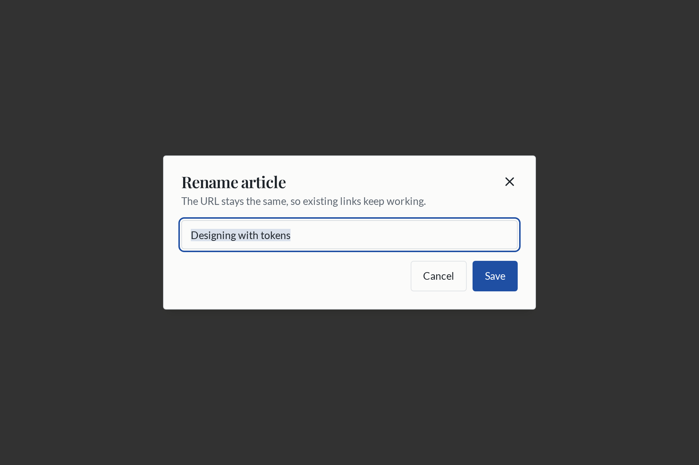
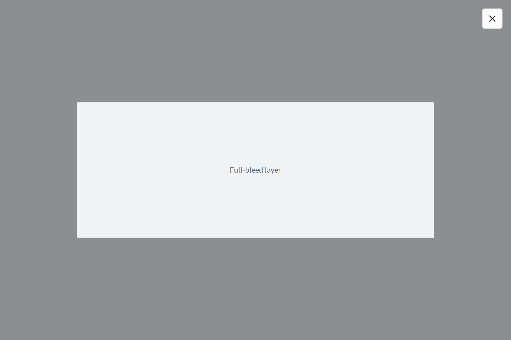

Dialog
Default surface, or none at all
The same component, composed two ways. Before variant, the right
one was a class string cancelling the left one's defaults with
!important.

variant="default"
A centred card: border, radius, padding, entrance animation, the house ghost close
button.

variant="bare"
Full viewport, no card chrome, no animation. The consumer colours the veil and supplies
the close affordance.